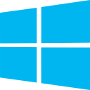

А сейчас разберемся же чем так привлекателен Linux для опытных пользователей, таких как программисты или системные администраторы. Ведь ни для кого не секрет что именно эта категория пользователей предпочитает эту ОС.


FAT/NTFS VS ext4
Файловая система в Linux из-за своей структуры в гораздо меньшей степени подвержена фрагментации, в отличии от NTFS или FAT32. Каждому, хоть раз, приходилось на своей Windows проводить процедуру дифрагментации, потому что ОС может начать тормозить из-за этого. И чем дальше - тем больше. Почему? потому что в файловых системах NTFS/FAT что-бы ускорить чтение с диска файлы стараются располагать как можно ближе друг к другу. И когда файл изменяется - он не может просто стать больше. Он записывается в конец всех записей, и на этот кусок информации создается ссылка. Ext3/4 имеет принципиально другое устройство: файлы распределяются по диску равномерно и занимают все доступное пространство вокруг себя. За счет этого вплодь до заполнения диска на 80-90% фрагментация не возникает в принципе. В остальных отношениях эта ФС не быстрее и не медленее аналогов... Кроме операций одновременной записи и считывания больших объемов данных, где ext показывает лучшие показатели. К тому-же linux поддерживает «из коробки» гораздо большее количество ФС, чем Windows.
Только на производительных компьютерах VS Работа на любом железе
В мире все чаще и чаще слышишь об IoT (Internet of Things), умных домах и прочих вещах. Многие экспериментируют с маленькими компьютерами, типа Raspberry PI или Arduino. Windows нельзя поставить на такое «неполноценное» железо. Но вполне возможно запихнуть если не полноценный дистрибутив Линукса, то его ядро и необходимые для работы компоненты. К тому-же, на старый компьютер врядли можно поставить современную Windows, так как она поставляется неразделимой системой. Линукс же можно подобрать из огромного множества дистрибутивов. Последнии версии легковесной Lubuntu идут на многих старых компьютерах с завидной скоростью, в отличии от Windows. При этом вы получаете полноценную и полностью обновленную ОС, а любимая многими ХР уже давно устарела и не поддерживается. А дистрибутив Debian имеет самый большой список поддерживаемых архитектур в мире.
Отсутствие гибкости VS Возможность гибкой настройки вручную
С точки зрения персонализации у Linux опять огромное преимущество: тут не то что тем рабочих столов большое множество, тут самих
оболочек рабочего стола большое множество. Предпочитаете минимализм и классику? Вам прекрасно подойдет оболочка xfce (сам
создатель линукса ей пользуется!). Цените функциональность и горчие клавиши привыше всего? Canonical располагает прекрасным
решением - оболочка Unity. Красота? Материал-дезигн? KDE - ваш фаворит. Или, как мне, вам не надо многого, а необходим просто
приятный современный интерфейс? Советуюю присмотреться к Cinnamon... А может вам по вкусу прийдется оболочка MATE - переосмысление
старой, доброй, линуксовой оболочки Gnome2? И это я и половины доступных оболочек не описал. А темы к ним создаются с, относительно,
большой простотой. Я, конечно, не могу говорить обо всех, но Cinnamon - это JavaScript и CSS. Т.е. многие веб-дизайнеры и веб-программисты
могут просто взглянув на исходный код стандартной оболочки (открытый исходный код, да!) сделать свой уникальный продукт. От мелких
правок цветовой гаммы, до полностью своей и самостоятельной графической оболочки. Круто? - Круто! Так-же можно создать свой дистрибутив
- вам никто не мешает этого сделать. Какой-то компонент системы вам не нужен? Выкидываем! Нужны другие программы по умолчанию?
Пожалуйста! Своя сборка ядра? Да ни вопрос! Главное не ударится в тотальное красноглазиe. Пользователи винды о
таком могут только мечтать!
ClosedSource code VS OpenSource
Ни для кого не секрет, что Windows - это закрытая операционная система, взлом которой преследуется по закону (как и любого кода, но не суть). Lunux - напротив, имеет открытый исходный код как самого ядра, так и многих продуктов разработанных под него.
Очень паршивая консоль VS Сильная консоль
Многие системные администраторы привыкают к консоли очень быстро. Руки от клавиатуры не отрываешь, мышкой не ялозишь туда-сюда, программки там компилируешь, вообщем, занимаешься своими стандартными обязанностями. Так вот - консоль Linux гораздо более «умная» и понятная, нежели его недоразвитый представитель семейства Windows. Что уж говорить, если Windows в серъез занялась переносом всех комманд и утилит в свою консоль. Хотя, конечно, можно было разширить возможности консоли винды другими утилитами, которые устанавливали в консоль все комманды Unix.
.exe-файлы с вирусами VS Проверенные источники
Многие программы в Linux устанавливаются из т.н. «реппозиториев» - хранилищ исходного кода. Это гораздо более доверенный источник чем любой .exe-файл. Особенно если использовать только официальные реппозитории.
MBR VS GRUB
Master Boot Record - это загрузчик Windows-разделов. Уже чуете подвох? MBR умеет загружать только Windows. Grub - это многофункциональный загрузчик. Загружает все ОС, которые он может найти в автоматическом режиме, или же можете прописать их сами. В нем можно еще и прописывать комманды для запуска ядра Linux, играть простые игры, да даже запихнуть фоновую картинку (правда, небольшого разрешения, не больше 800х800рх, но все-же!).
Ну и главное - Linux бесплатен! Что освобождает компаниы от штрафов за использование нелецензионного ПО, или от затрат на лицензии
Вот мы и прошлись вкратце по основным плюсам Linux. Теперь мы имеем понятие, почему люди могут предпочитать именно ее. Я вот, например, совмещаю плюсы каждой из ОС, поэтому у меня их две. И я не могу себе представить жизнь без обоих. Хотя и предпочитаю Linux, чесслово.
Но пора двигаться дальше, и следующим нашим вопросом, довольно распространенном (сам им не раз интересовался) будет - что за зверь то такой? Linux? Unix? В чем разница? Или если это одно и тоже понятие, то почему есть два слова обозначающие его? Об этом далее!